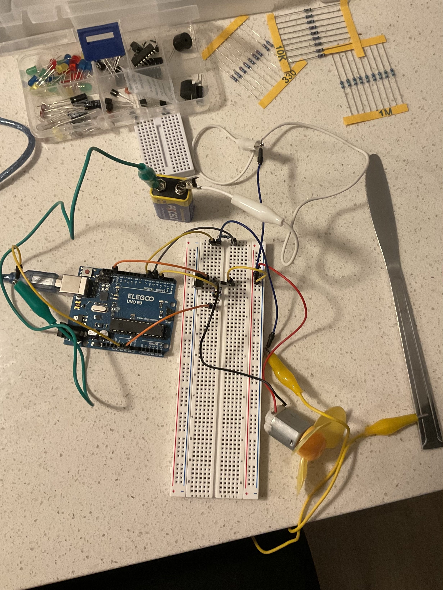

Assignment 5: Smart Fan.2
Touching a foil pad steps a small DC fan through four speeds: off, low, medium, high, then back to off.
Connections
| Part | Connects to |
|---|---|
| Touch pad (foil) | Pin 4 → 1MΩ resistor → pin 5. |
| Gate resistor and pull-down | Pin 3 → 330Ω → MOSFET gate → 10kΩ → GND. |
| MOSFET (IRLZ44N) | Gate → 330Ω and 10kΩ row, drain → motor − row, source → GND rail |
| Motor | Battery (+) → motor (+), motor (−) → MOSFET drain |
| Flyback diode | striped end → battery (+) / motor (+) row, other end → MOSFET drain / motor (−) row |
| Battery | + → motor (+) row, − → GND rail |
| Arduino GND | GND rail, shared with the battery (−), MOSFET source, and the 10kΩ resistor |
1. Schematic and breadboard


Demo

Code
// Include the CapacitiveSensor library so we can measure touch
#include
// PWM-capable pin that drives the MOSFET gate through a 330 ohm resistor
const int MOTOR_PIN = 3;
// Number of speed levels (off, low, medium, high)
const int NUM_LEVELS = 4;
// PWM value for each speed level
const int LEVELS[NUM_LEVELS] = {0, 100, 175, 255};
// Raw reading above which we count the pad as touched (calibrated from Serial Monitor: untouched max ~62, touched min ~1004)
const long TOUCH_THRESHOLD = 500;
// Create the sensor: pin 4 is the send pin, pin 5 is the receive pin (touch pad)
CapacitiveSensor touchPad = CapacitiveSensor(4, 5);
// Index of the current speed level, starting at 0 (off)
int level = 0;
// Remembers whether the pad was touched on the previous loop
bool wasTouched = false;
// setup() runs once when the Arduino powers on or resets
void setup() {
// Start serial communication at 9600 baud so we can watch readings
Serial.begin(9600);
// OUTPUT: pin actively drives 5 V (HIGH) or 0 V (LOW) to the gate; it is a low-impedance source, unlike the default INPUT state which floats (high impedance)
pinMode(MOTOR_PIN, OUTPUT);
// Make sure the fan is off at startup (0 = pin held LOW the whole time)
analogWrite(MOTOR_PIN, 0);
}
// loop() runs over and over after setup() finishes
void loop() {
// Take 30 samples from the pad and store the total as the raw reading
long reading = touchPad.capacitiveSensor(30);
// Decide whether the pad is touched by comparing the reading to the threshold
bool touched = reading > TOUCH_THRESHOLD;
// Only act on the moment the touch starts, not while the finger stays down
if (touched && !wasTouched) {
// Move to the next speed level and wrap back to 0 after the last one
level = (level + 1) % NUM_LEVELS;
// Send the PWM value for this level to the MOSFET gate
analogWrite(MOTOR_PIN, LEVELS[level]);
}
// Save the current touch state for the next loop
wasTouched = touched;
// Print a label for the raw reading
Serial.print("Reading: ");
// Print the raw reading
Serial.print(reading);
// Print a label for the PWM value
Serial.print(" PWM: ");
// Print the current PWM value and end the line
Serial.println(LEVELS[level]);
// Short pause so the Serial Monitor is readable and touches aren't double counted
delay(50);
} Calculations
These use a 6 V supply and a motor that draws about 0.25 A running and 0.6 A stalled.
Gate resistor (330 Ω)
When pin 3 is HIGH, the peak gate current is 5 V / 330 Ω ≈ 15 mA. That is under the 20 mA recommended for an Uno pin, and the resistor limits the surge while the gate charges.
Gate pull-down (10 kΩ)
With pin 3 HIGH, the pull-down draws 5 V / 10 kΩ = 0.5 mA, which is negligible. It holds the gate at 0 V while the Arduino boots or resets, so the fan can't turn on by accident.
MOSFET fully on (analogWrite = 255)
VGS = 5 V, well above the gate threshold. From the datasheet, RDS(on) ≈ 0.022 Ω at VGS = 5 V. At 0.25 A, VDS = 0.25 × 0.022 ≈ 5.5 mV, so the motor sees almost the full 6 V. The power in the MOSFET is I²R = 0.25² × 0.022 ≈ 1.4 mW.
MOSFET off (analogWrite = 0)
VGS = 0 V, so no current flows. VDS ≈ 6 V and the motor sees 0 V.
Speed levels
PWM switches the motor on and off quickly, so the average motor voltage is (analogWrite / 255) × 6 V.
| Level | analogWrite | Duty cycle | Expected average motor voltage |
|---|---|---|---|
| Off | 0 | 0% | 0 V |
| Low | 100 | 39% | 2.35 V |
| Medium | 175 | 69% | 4.1 V |
| High | 255 | 100% | 6 V |
Touch sensor (1 MΩ)
The send pin charges the pad through the 1 MΩ resistor, so the maximum current is 5 V / 1 MΩ = 5 µA.
Transistor current limit
The IRLZ44N can handle a maximum continuous drain current of 47 A (datasheet, at 25 °C). The most the motor draws is its stall current of about 0.6 A, which is about 1.3% of that limit, so the MOSFET is well within its rating. The flyback diode is rated for 1 A, which is also above 0.6 A.
Flyback diode
When the MOSFET turns off, the motor's inductance keeps pushing current that has nowhere to go. The diode gives that current a path back to the supply, which protects the MOSFET from the voltage spike.
5. Questions
Q1: Maximum current between pins 2 and 3
For this project, I chose to use the IRLZ44N MOSFET. On this part, pin 2 is the drain and pin 3 is the source, so the current between them is the continuous drain current. The datasheet's Absolute Maximum Ratings table lists ID = 47 A at a case temperature of 25 °C (33 A at 100 °C).
Q2: Schematic with Arduino, DC motor, and flyback diode

- Arduino Uno R3: datasheet
- IRLZ44N MOSFET: datasheet
- Flyback diode (1N4007): datasheet link here
- DC motor: datasheet link here
Q3: L293D schematic and pseudo-code

// Set the L293D control pins as outputs
setup:
set pins 5, 6, 7, 8, 9, 10 as OUTPUT
// Enable both motors at full speed
write 255 to pin 5
write 255 to pin 10
loop:
// Both motors forward
pin 6 = HIGH, pin 7 = LOW, pin 8 = HIGH, pin 9 = LOW
wait 2 seconds
// Both motors back
pin 6 = LOW, pin 7 = HIGH, pin 8 = LOW, pin 9 = HIGH
wait 2 seconds
// Motor 1 forward, motor 2 back
pin 6 = HIGH, pin 7 = LOW, pin 8 = LOW, pin 9 = HIGH
wait 2 seconds
// Motor 1 back, motor 2 forward
pin 6 = LOW, pin 7 = HIGH, pin 8 = HIGH, pin 9 = LOW
wait 2 secondsAI use
I used AI to help me troubleshoot my existing code. Some example prompts I include:
- "the swervo is reactive to the sensor, but the led light still goes on and off whenever ad not based on the touchpad"
- "the touch is not working, and the serialmonitor display does not go up to 30"
- "The light is not turning on and my touch is not registering. Here is my current code. What is the reason it's not responsive?"
- "I am getting an error when I'm running my program. Why is this happening?"